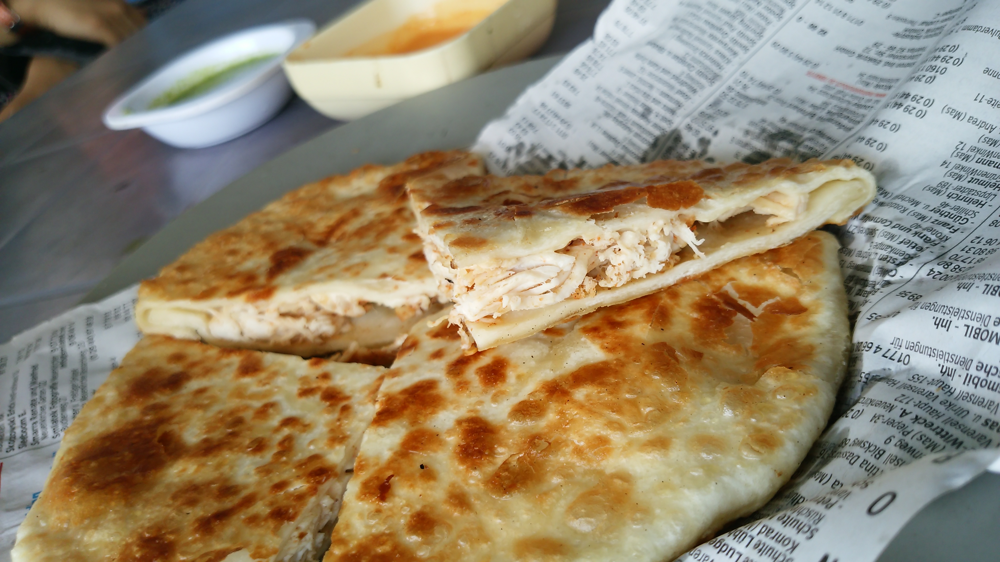

Chicken Cheese Paratha According to Food Fusion

Ingredients
Flour 1 cup
White flour (Maida) 1 cup
Salt 1 Tb spoon
Oil 1/4 cup
Water (warm) as required for making dough
Yoghurt 2-3 Tb spoon
Ginger garlic paste 1 Tb Spoon
Chicken (boneless) 1/2 Kg
Red chilli (crushed) 1 & 1/2 Tb spoon
Cumin seeds (roasted and crushed) 1 & 1/2 Tb spoon
Black pepper (crushed) 1 & 1/2 Tb spoon
Cream cheese as required for filling layer
Cheddar cheese as required for taste
Mozarella cheese as required for taste
Process
For making Dough
Mix flour, white flour, salt and 1/4 cup of oil and make dough by adding warm water
Cover the dough in bowl and leave for 15-20 Mins
For Chicken
Mix well yoghirt, ginger galric paste,salt 1/2 Tb spoon , red chilli, cumin seeds and black pepper
Add chicken (small pieces) to mixture properly
Fry chicken untill cooked well
Filling
Make 2 circle roti
Appli cream cheese on 1 roti, pour some cubes of fried chixken, pour some amount of Cheddar and mozarella
cheese on roti
Place 2nd roti over it and press the sides to join
Fry on medium flame to prepaer Chicken Cheese Paratha
Make as much as you want and serve hot with sauce
For Video Click here!
Do you like and try the Recipe? share your comments below.
Submit
Chicken Cheese (Paneer) Paratha is a very tasty cheesy and healthy variation of the flat bread with cheese and
chicken. Make tomato salsa for paratha with onion, capsicim and red onion. Poir cheese, and salsa on bread and
then
fry in pan. Before serving cit paratha in pieces, drizzle soir cream and garnish with coriander leaf. Enjoy this
deliciois paratha diring iftar time.